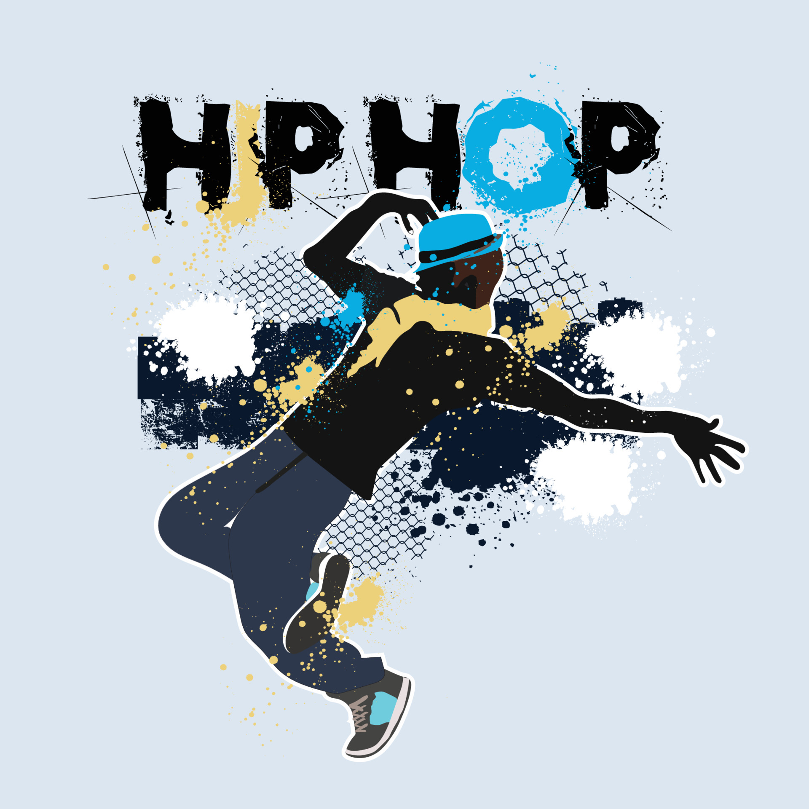

 Hip Hop (or Hip-Hop) is a culture and art movement that was created by African Americans, pioneered from Black American street culture, also known as hip hop African American culture, that had been around for years prior to its more mainstream discovery while later reaching other groups such as Latino Americans and Caribbean Americans, starting in the Bronx, New York City. Hip Hop is one of cultural movements that has been shaped and dominated by African American males, though female hip hop artists have contributed to the art form and culture as well. Hip hop culture is characterized by the key elements of rapping, DJing and turntablism, and breakdancing. Other elements include historical knowledge of the movement, graffiti, beatboxing, street entrepreneurship, hip hop language, and hip hop fashion.
A Hip Hop enthusiast from New York City has always heard that 1520 Sedgwick Avenue in the Bronx is the birthplace of hip hop. The story goes that on August 11, 1973 DJ Kool Herc, a building resident, was entertaining at his sister’s back-to-school party, and tried something new on the turntable: he extended an instrumental beat (breaking or scratching) to let people dance longer (break dancing) and began MC’ing (rapping) during the extended breakdancing. This, the contributor believes, marked the birth of hip hop. The music led to an entire cultural movement that’s altered generational thinking – from politics and race to art and language. History Detectives sets out to examine an inner city environment that helped lay the foundation for a cultural revolution.
These Nine Elements are the beginning of Independence and Self-Governance for Hiphoppas. We are financed by our cultural Elements, these are our intellectual properties. If we are to become and remain politically and socially strong we cannot continue to give our intellectual property (our Elements) away to those who care little for our continued development and well-being as a people.
A Hip Hop Element is one of Hip Hop’s cultural expressions. It is a material good. It is our intellectual property. It is our capital. It is an act, art, or idea that further expresses Hip Hop’s culture and consciousness. It is a skill that reflects the character of the Hiphop consciousness and enhances the Health, Love, Awareness, and Wealth of the truly committed Hiphoppa.
Breakdancing
Emceeing (or Rapping)
Graffiti Art
DeeJaying
Beat Boxing
Street Fashion
Street Language
Street Knowledge
Street Entrepreneurship
Hiphop’s or Hip Hop’s Elements are the sources of Hiphop Kulture’s political power. They are also the sources of a Hiphoppa’s liveliehood. They are how the Hiphoppa provides for and protects themselves and their family. True Hiphoppas are specialized in at least one or more of Hiphop’s Nine Elements.
"Every battle is won before it is fought" - Sun Tzu